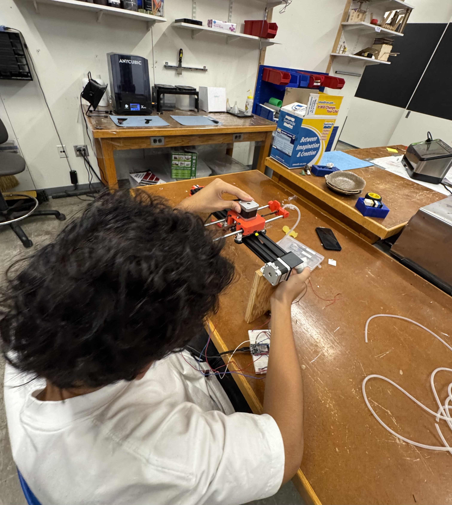

Build Process (Step by Step)
Step 1: Project Idea & Research
I started by researching pancake art robots and other drawing machines on YouTube and Instructables. This helped me understand different designs, what features people liked, and common build mistakes to avoid. My goal was to make a WiFi-controlled robot that could turn digital sketches into pancake art—basically combining coding, robotics, and breakfast.
Step 2: Brainstorming & Rough Sketches
I drew a few rough sketches on paper of what I wanted the machine to look like. I mapped out where the motors, rails, frame, electronics, and the pan would sit. This step was important to get my ideas out and see if my design actually made sense before doing anything physical.
Step 3: Making a Materials & Tools List
I wrote a checklist of everything I'd need, from stepper motors and 3D-printed brackets to jumper wires, power supplies, wood for the frame, and a mini frying pan. I double-checked what I could borrow from the lab, what I needed to print, and what needed to be bought.
Step 4: Workspace Setup & Safety Prep
Before cutting or building, I made sure my workspace was organized and safe. I put on safety goggles, cleared the table, and organized all the tools and parts in bins. This made every step smoother and helped avoid losing small screws or parts.
Step 5: Measuring and Marking Wood
I measured and marked the wood pieces for the base and vertical supports using a ruler and square. Precision here is super important—a crooked frame would mess up the motion system later, so I double-checked all my marks before cutting.
Step 6: Cutting and Sanding Frame Pieces
Using a bandsaw, I cut the wood to size, then sanded each edge to make sure everything fit tightly and no one would get a splinter. After sanding, I laid the pieces out to double-check that the lengths and angles were correct.
Step 7: Pre-drilling and Dry-Fitting the Frame
I used a drill to make small pilot holes in the wood where the screws would go—this keeps the wood from splitting. Then, I did a dry fit, clamping the pieces together to make sure everything lined up, before committing with screws.
Step 8: Assembling the Frame
I assembled the frame by screwing the base and supports together, checking for squareness after every step. Once assembled, I tested its sturdiness by pushing on each side to make sure nothing wobbled.
Step 9: 3D Printing Custom Parts
I printed all custom brackets, belt clips, and motor mounts in PLA using the lab's 3D printers. I cleaned up each piece with a hobby knife or sandpaper to make sure everything fit together perfectly and moved smoothly on the rails.
Step 10: Organizing Hardware and Fasteners
Before assembly got messy, I organized all the screws, nuts, washers, and small hardware into a labeled tray. I learned the hard way from other projects that a few lost screws can waste a ton of time.
Step 11: Mounting the Linear Rails and Gantry
I attached the black aluminum X-axis rail and linear rods to the frame using machine screws and the 3D-printed brackets. I double-checked that the rails were parallel and level to avoid any jamming. The main gantry slides back and forth smoothly now.
Step 12: Installing and Aligning the Belt System
Next, I installed the GT2 belts for both X and Y axes, threading them through the pulleys and attaching the ends to the carriage with 3D-printed clips. Getting the belt tension just right took a few tries—too loose, and it skips; too tight, and it binds. The close-ups really show how the belt system is anchored and aligned.

Step 13: Mounting Stepper Motors and Pulleys
I mounted both NEMA 17 stepper motors, one for each axis, using the 3D-printed brackets. I had to swap out an oversized drive gear for a smaller one, which finally let the belt mesh properly with the pulley. All bolts were tightened so nothing slipped during motion.

Step 14: Installing Limit Switches for Homing
I hot-glued two micro limit switches at the home positions for the X and Y axes. These are wired to the ESP32 and are used for zeroing the position at startup. Careful alignment was needed so the carriage triggers the switch consistently and gently.

Step 15: Wiring Up Electronics and Breadboard
I wired up the ESP32, stepper motor drivers, limit switches, and pump relay on a breadboard. There were a lot of jumper wires, so I bundled them to keep the workspace neat and prevent accidental disconnects during testing.
Step 16: Mounting the Pump and Batter Delivery System
I glued the 12V water pump inside the frame and ran a food-safe tube from the batter reservoir to the dispenser head above the pan. After a quick test with water, I found I needed more power, so I switched to a 12V supply for steady batter flow.
Step 17: Full Assembly and Cable Management
With all parts in place, I did a final assembly—making sure all screws were tight, belts were tensioned, and cables were routed safely through braided sleeves to keep them away from the hot pan area. The frame is now sturdy, and everything looks neat.
Step 18: First Power-On and Axis Testing
For the first test, I powered up the ESP32 and checked each axis one at a time with basic movement commands. This helped me verify direction, range, and step size. I also checked that the limit switches stopped each axis at the home position as planned.
Step 19: Calibration and Pancake Drawing Tests
I calibrated the machine by measuring the distance traveled per step and adjusting the software until shapes like squares and circles came out accurate on the pan. I tweaked the pump on/off timing to get perfect pancake lines, and made several test pancakes to tune things in.
Step 20: Setting Up WiFi Control and Final Demo
The last step was coding a web-based drawing interface with HTML5 Canvas. I set up the ESP32 as a WiFi server, so I could send my drawings straight to the robot from any device. After testing, the machine could turn my sketches into real pancakes! It’s awesome to see everything working together—mechanical, electrical, and code.